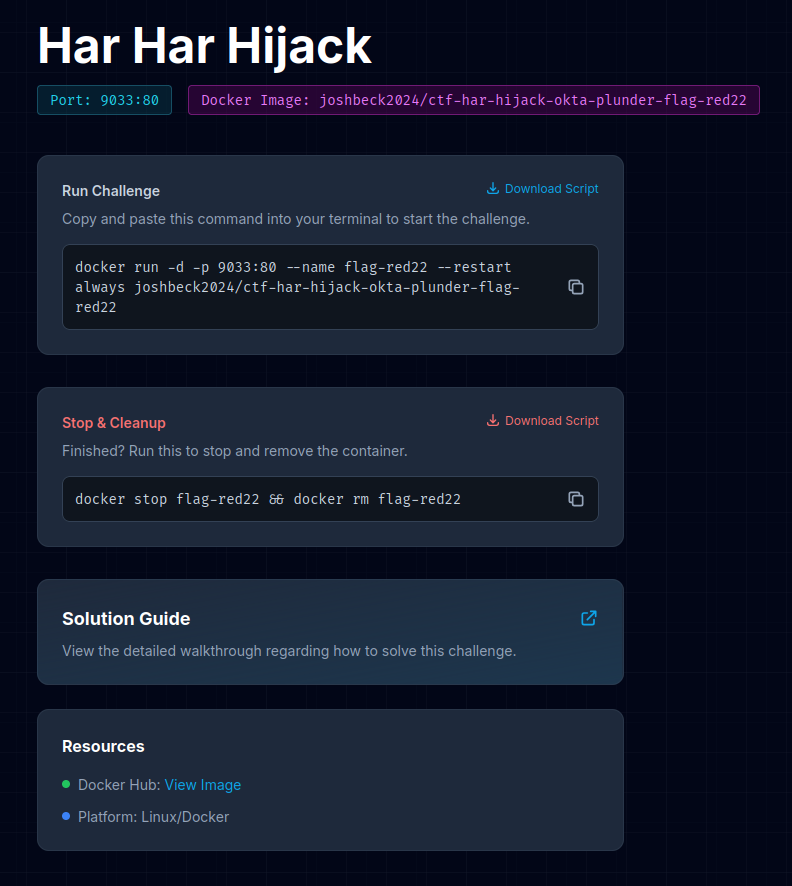
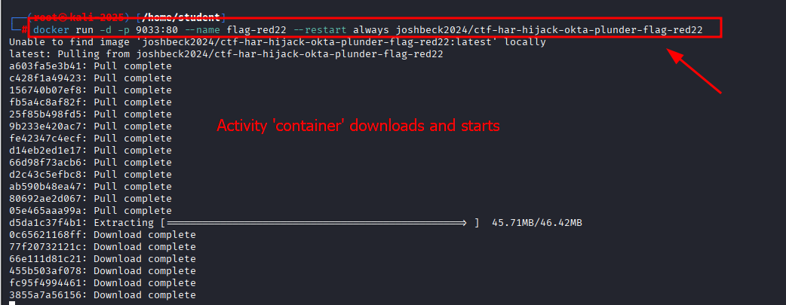
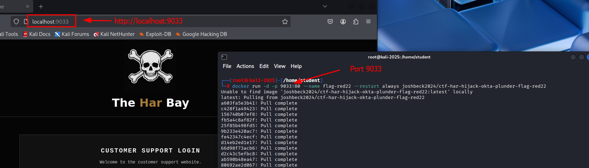

Quick Example: iCSI Activities are Portable
Click Here to see the Activity on Cyberlessons101.com
- Each challenge relates to real-world scenarios — students investigate breaches like 1Password/Okta to build context and motivation.
-
docker runcommand: Just type the docker run command — the container/VM spins up locally! Super easy.

Access the activity on port 9033 once the container is running.
